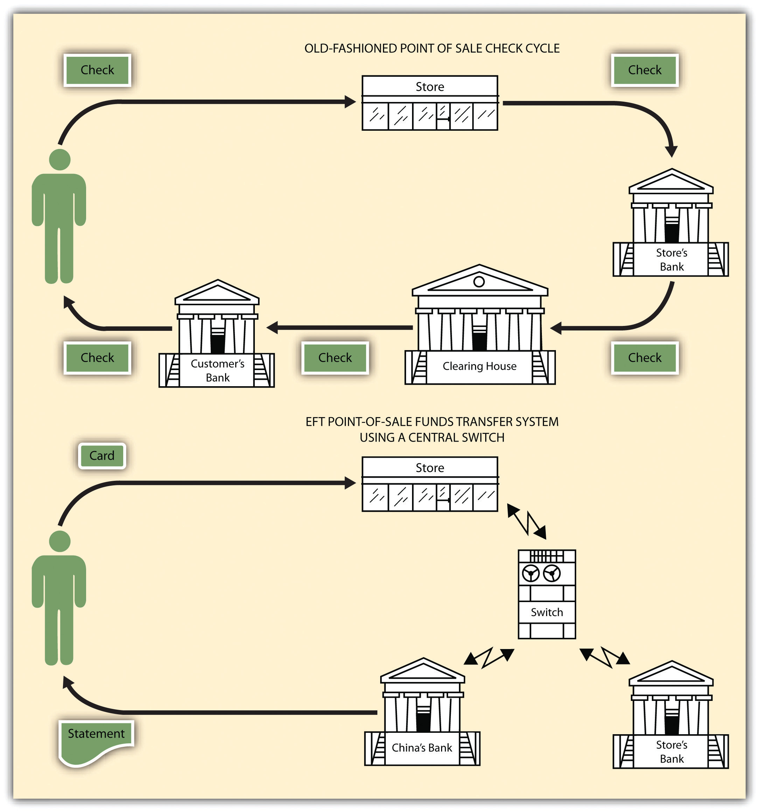

Drowning in the yearly flood of billions of checks, eager to eliminate the “float” that a bank customer gets by using her money between the time she writes a check and the time it clears, and recognizing that better customer service might be possible, financial institutions sought a way to computerize the check collection process. What has developed is electronic fund transfer (EFT), a system that has changed how customers interact with banks, credit unions, and other financial institutions. Paper checks have their advantages, but their use is decreasing in favor of EFT.
In simplest terms, EFT is a method of paying by substituting an electronic signal for checks. A “debit card,” inserted in the appropriate terminal, will authorize automatically the transfer of funds from your checking account, say, to the account of a store whose goods you are buying.
You are of course familiar with some forms of EFT:
The “short circuit” that EFT permits in the check processing cycle is illustrated in Figure 26.2 "How EFT Replaces Checks".
Figure 26.2 How EFT Replaces Checks
Unlike the old-fashioned check collection process, EFT is virtually instantaneous: at one instant a customer has a sum of money in her account; in the next, after insertion of a plastic card in a machine or the transmission of a coded message by telephone or computer, an electronic signal automatically debits her bank checking account and posts the amount to the bank account of the store where she is making a purchase. No checks change hands; no paper is written on. It is quiet, odorless, smudge proof. But errors are harder to trace than when a paper trail exists, and when the system fails (“our computer is down”) the financial mess can be colossal. Obviously some sort of law is necessary to regulate EFT systems.
Because EFT is a technology consisting of several discrete types of machines with differing purposes, its growth has not been guided by any single law or even set of laws. The most important law governing consumer transactions is the Electronic Fund Transfer Act of 1978Federal law that provides a basic framework establishing the rights, liabilities, and responsibilities of participants in electronic fund transfer systems.,FDIC, “Electronic Fund Transfer Act of 1978,” http://www.fdic.gov/regulations/laws/rules/6500-1350.html. whose purpose is “to provide a basic framework establishing the rights, liabilities, and responsibilities of participants in electronic fund transfer systems. The primary objective of [the statute], however, is the provision of individual consumer rights.” This federal statute has been implemented and supplemented by the Federal Reserve Board’s Regulation E, Comptroller of the Currency guidelines on EFT, and regulations of the Federal Home Loan Bank Board. (Wholesale transactions are governed by UCC Article 4A, which is discussed later in this chapter.)
The EFT Act of 1978 is primarily designed to disclose the terms and conditions of electronic funds transfers so the customer knows the rights, costs and liabilities associated with EFT, but it does not embrace every type of EFT system. Included are “point-of-sale transfers, automated teller machine transactions, direct deposits or withdrawal of funds, and transfers initiated by telephone or computer” (EFT Act Section 903(6)). Not included are such transactions as wire transfer services, automatic transfers between a customer’s different accounts at the same financial institution, and “payments made by check, draft, or similar paper instrument at electronic terminals” (Reg. E, Section 205.2(g)).
Four questions present themselves to the mildly wary consumer facing the advent of EFT systems: (1) What record will I have of my transaction? (2) How can I correct errors? (3) What recourse do I have if a thief steals from my account? (4) Can I be required to use EFT? The EFT Act, as implemented by Regulation E, answers these questions as follows.
The financial institution’s failure to make an electronic fund transfer, in accordance with the terms and conditions of an account, in the correct amount or in a timely manner when properly instructed to do so by the consumer makes it liable for all damages proximately caused to the consumer, except where
1) the consumer’s account has insufficient funds;
2) the funds are subject to legal process or other encumbrance restricting such transfer;
3) such transfer would exceed an established credit limit;
4) an electronic terminal has insufficient cash to complete the transaction; or
5) a circumstance beyond its control, where it exercised reasonable care to prevent such an occurrence, or exercised such diligence as the circumstances required.
A host of federal regulatory agencies oversees enforcement of the act. These include the Comptroller of the Currency (national banks), Federal Reserve District Bank (state member banks), Federal Deposit Insurance Corporation regional director (nonmember insured banks), Federal Home Loan Bank Board supervisory agent (members of the FHLB system and savings institutions insured by the Federal Savings & Loan Insurance Corporation), National Credit Union Administration (federal credit unions), Securities & Exchange Commission (brokers and dealers), and the Federal Trade Commission (retail and department stores) consumer finance companies, all nonbank debit card issuers, and certain other financial institutions. Additionally, consumers are empowered to sue (individually or as a class) for actual damages caused by any EFT system, plus penalties ranging from $100 to $1,000. Section 26.4 "Cases", under “Customer’s Duty to Inspect Bank Statements” (Commerce Bank v. Brown), discusses the bank’s liability under the act.
Eager to reduce paperwork for both themselves and for customers, and to speed up the check collection process, financial institutions have for thirty years been moving away from paper checks and toward electronic fund transfers. These EFTs are ubiquitous, including ATMs, point-of-sale systems, direct deposits and withdrawals and online banking of various kinds. Responding to the need for consumer protection, Congress adopted the Electronic Fund Transfers Act, effective in 1978. The act addresses many common concerns consumers have about using electronic fund transfer systems, sets out liability for financial institutions and customers, and provides an enforcement mechanism.